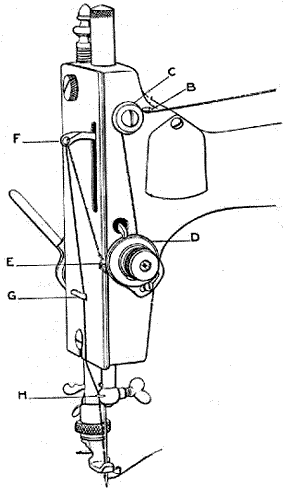
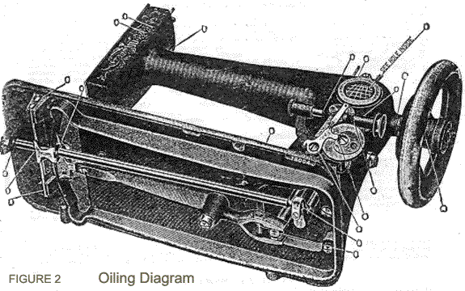
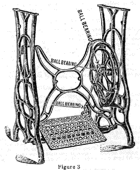
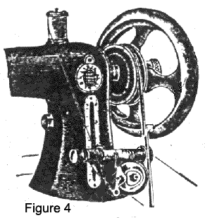
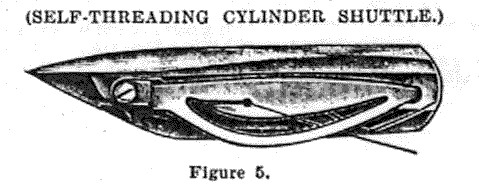

IMPORTANT - DO NOT RUN MACHINE BACKWARDS
Remember that every machine before leaving the factory is thoroughly tested on all kinds of work and that it MUST BE RIGHT WHEN RECEIVED. Should there be anything about the machine which you do not understand, correspond or communicate with the manufacturer or your dealer before condemning it.
Do not allow anyone to tinker with your machine under any circumstances. You will no doubt have numerous sewing machine repairers that will want to clean, adjust and fix it up, or there will be agents for other machines that may call and want to operate it. Never allow them to get their hands on the machine, for many cases have been known where dishonest agents would bend or disarrange something about the machine so that it would not work properly, then contend that it was no good and want to sell one of the style they handle.
Always bear in mind that this machine is WARRANTED, and that if anything about it is wrong it will be made right. Always speak a good word for your machine WHENEVER and WHEREVER you can.
Place spool on spool pin A, lead the thread from the spool under pin B, and back of button C, then down and between tension discs D from right to left, and through the eye of the thread take up spring E, then up and through the hole in the take up lever F, and then down and back of thread guide G on the face plate and on down back of the thread guide H on the needle clamp, then from let to right through the eye of the needle.
The machine must always be kept clean, and every part where there is the least friction should be kept lightly oiled with the best prepared oil in the places indicated in the cuts. Oil the left point of the bobbin when being filled. The shuttle should be oiled (only a drop between the shuttle and race way) at least once a day when in constant use.

After the machine has been oiled, run it (with presser foot up and shuttle out) for a minute, then wipe off the superfluous oil. If it runs hard after standing idle for some time, use a little kerosene oil in the usual way and run rapidly; wipe clean, then oil with the best prepared oil, which should always be used.
Recollect that every part where there is any friction should be carefully oiled. Only a small quantity of oil should be used at a time.
The places indicated by the letter O give each friction part of the head which requires lubrication. See Figures 2 and 3.
Familiarity with the motion of the treadle is first to be learned,and practice is necessary in order to give a steady and uniform revolution to the driving wheel.
The presser foot, which holds the work in place on the feed, should be raised to prevent the feed from injury by contact with it.
Place the feet on the treadle with the instep directly over the rod upon which the treadle rests. Star the machine by placing the right hand upon the top of the balance wheel and revolving it towards you, taking care to give it impetus enough to keep up a regular movement by pressing alternately with the heel and ball of the foot with equal effect. This should be practiced until a uniform motion of the wheel is obtained.
Do not attempt to sew until you are familiar with the treadle movement.
Draw out the front slide, put the shuttle in the carrier or basket (with point towards you), then close the slide. It is sometimes convenient to withdraw the rear slide and put the shuttle in the carrier. This is the case when some of the attachments are in use.
After placing the belt in the groove of the balance wheel, hold it in the notch of the driving wheel and turn the balance wheel towards you. The belt should be run outside of the bobbin winder.
The belt that communicates motion to the machine should always be kept tight enough to move it without slipping. Should it become too loose, cut it to the desired length.
First loosen the screw that clamps the needle and allow the needle bar to rest at its highest point; then take the needle (with flat side of shank toward the needle bar) between the thumb and finger of the left hand; then insert the needle into the groove (as far as it will go) under the clamp and screw fast (observe that the needles pass through the hole in the throat plate without touching either side).
If linen or silk or very coarse cotton is used the needle may be set a little lower than in ordinary sewing.
Unlock the balance wheel with the thumb and forefinger of the right hand, by turning the key or center button towards you (this will prevent the machine from wearing and save the trouble and annoyance of unthreading it, and removing the work while the bobbin is being filled).
Then swing the bobbin winder towards you until it presses lightly against the belt.
Place the spool of thread to be wound from on the spindle, and put the bobbin in the bobbin winder.
Pass the thread from the spool under the the hook at the lower end of the bobbin winder distributer. To secure the end of the thread preparatory to winding, place it between the head of the bobbin and its socket at the right hand.
Proceed as in sewing. When the bobbin has been filled swing the bobbin winder from the belt, and turn back the key or Center Button until it locks the balance wheel.
Take the shuttle in the left hand with the point toward you; draw off about two inches of thread from the bobbin, thread running from the upper side; then put the bobbin in the shuttle as far as it will go.
Then draw the thread into the open slot of shuttle, at the same time putting thread in the slot and drawing it toward you it will be forced under the point of the shuttle spring.
The tension is regulated by turning the screw in the point of the shuttle to the right or left; to the right to give more tension, to the left to lessen the tension.
The gauge is attached to the bed plate by means of a thumb screw. It is used for enabling the operator to sew at a given distance from the edge.
Place spool on spool pin A, lead the thread from the spool under pin B, and back of button C, then down and between tension discs D from right to left, and through the eye of the thread take up spring E, then up and through the hole in the take up lever F, and then down and back of thread guide G on the face plate and on down back of the thread guide H on the needle clamp, then from let to right through the eye of the needle.
Unfasten the thumb screw on the front of the arm (at the rear of the bobbin winder) by turning it to the left, then slide it upward for a longer and downward for a shorter stitch.
Tighten the thumb screw firmly so it will not jar loose while operating the machine. The figures indicated on the plate note the number of stitches to the inch the machine will make where the thumb screw is placed.
Take hold of the balance wheel with one hand and the needle thread with the other, keeping the latter slack, so as not to spring the needle; move the wheel toward you once around and pull up the needle thread with your hand, to draw the shuttle thread through the throat hole. Then take both threads and pass them under the presser foot, toward the back of the machine.
The machine now being fully threaded, above and below, and the shuttle thread drawn up, you are ready to commence sewing. Raise the presser foot by the presser bar lifter, which you will find at the rear of the faceplate (lower end), to the first notch or lift for light fabrics, and to the second notch as far as it will go for heavy work.
Put the work under the presser foot and release the lifter so that the foot will come down upon the work. Avoid pushing or pulling the goods while sewing. Always turn the balance wheel toward you while sewing.
Lengthen the stitch in proportion to the thickness of the goods. If goods are very thick, set the needle a little lower than usual. In sewing heavy or hard fabrics greater pressure is required than for light-weight goods. This pressure is regulated by the adjustment nut at the top of the Presser Bar, turning to the right to increase and to the left to decrease the pressure.
After threading the shuttle try the tension by drawing the thread toward the blunt end; if it draws tightly, it is right for goods of firm texture; thin, soft goods require a loose tension. To obtain more or less tension, put more or less pressure on the shuttle tension spring, as described heretofore.
The tension of the top thread is adjusted by the tension screw D, turning to the right to tighten and to the left to slacken it. Care must be taken in regulating the tension of the upper and lower threads. If the tension on either thread is too tight, it will cause the thread to break and the seams will be puckered. If there is not sufficient tension, the thread will not be brought into the fabric, but will lie in loops on either side. When both tensions are properly adjusted the threads are drawn to the center of the fabric.
The tensions upon both threads should be nearly alike as possible, and tight enough only to make a smooth and firm seam. If the threads are of proper size for the material used and both tensions right the threads will be drawn and locked together in the center of the goods, thus:
Should there be at any time be skipped or long stitches at intervals, it is owing to the needle being set too low in very heavy sewing, or its having become bent away from the point of the shuttle, or its being too small for the thread in use, and sometimes to the point of the shuttle becoming accidentally blunted.
When using very fine needles and also stitching heavy work, be sure that the points of the needles are perfect and on a line with the center of the direction of needle, and not blunted or turned over. An imperfect needle will cause the best machine to miss stitches.
Allow the needle to rest at its highest point, raise the presser foot and with the left thumb press on the tension release B and with the right hand draw the work directly back of the needle
Loosen the circular thumb nut directly over the presser foot, by turning it towards you, then remove the presser foot from the holder by drawing it towards you, and insert in its place the attachment which you desire to use. Be sure that put such attachment back far enough so as to allow the needle to pass clearly in the needle hole of the attachment and also the throat plate underneath. Then tighten the thumb nut firmly by turning it away from you towards the left. Have the needle at its highest point while making the change.
The presser foot must never be let down on the feed unless you are sewing or have cloth under it.
When the shuttle is in, the machine must not be run with either of the shuttle slides out or partly open, as it is liable to bend or break some portion of the machinery.
Do not allow lint or dust to accumulate in the shuttle or under the shuttle tension spring. Particularly in the inner end of shuttle, as this would prevent the proper action of the bobbin. Also observe the same caution as to the upper tension.
Do not run the machine backward, or with both threads in, without sewing.
Do not use a dull or bent needle, or draw the work, the feed will naturally carry it.
Needles are frequently broken by failing to observe the latter caution.
The following named accessories are supplied with each machine free. We quote prices for each of the articles in case any are ordered separately, and will send same by mail on receipt of price. State distinctly what is wanted, and always give the NAME of machine and date of purchase when ordering:
1 Gauge
1 Gauge Screw
1 Oil Can (filled)
6 Bobbins
1 Instruction Book
1 Combination Screwdriver
1 Hemmer (which is also a Feller)
1 Dozen Needles
1 Belt and Coupling
1 Shuttle
1 Quilter